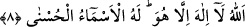

insanların rûhânî sırların mâdeni olması mümkündür. Bunların tümü makûlât/aklen
kavranabilir şeylerdir. Rabbânî nurlar ve sırlar ise sadece mü’mine iner ki bunlar
müşâhede, mükâşefe, ledünnî ilimler cinsindendir.
8. Allah kendisinden başka ilâh olmayandır. En güzel isimler O’na mahsustur.
Daha önce zikredilen yüce sıfatlarla mevsuf olan “Allah, kendisinden başka ilâh
olmayandır.” Yerde ve gökte O’ndan başka ilah yoktur. “illâ Hû” ifâdesi, hüviyyete
delâlet eder. Çünkü “Hüve (O zamiri)”, mevcud olan gaibden kinâyedir. Duyulardan
gâib, ezelde mevcud olan Allah’tır. Bunda güzel bir mânâ vardır. Şöyle ki, Allah gâib
olmadığı halde duyular O’nu idrak etmekten yüce olduğundan “O” zamîrine müstehak
olmuştur. Bahru’l-ulûm’da böyle denilmektedir.
Fakir (Bursevî) der ki: İşte bu manâdan dolayı sûfîler, gizli ve açık, toplu ve yalnız
olarak zikirlerini “Hû” ismi üzerine binâ ettiler. Her ne kadar “Hû”nun mercii Allah
olsa da zâhir isim hükmündedir. Bunu ancak büyüklenenler inkâr eder.
Bir hadiste şöyle buyrulmuştur: “Allah yeri ve göğü yaratmadan önce meleklerden
bir melek yarattı. Bu melek sesini uzatarak, sesini kesmeden ve nefes almadan
“Şehâdet ederim ki Allah’tan başka ilah yoktur” der. O bunu tamamlamaz.
Tamamlayıp bitirdiğinde ise Allah İsrafil’e sûra üflemesini emreder ve kıyamet
kopar.”[61] Bu hadis, Tefsîr-i Kebîr’de zikredilmiştir. Bu hadisten anlaşılmaktadır ki,
âlemin devâmı ve varlığının en büyük dayanağı zikirdir. Zikir kesildiği zaman âlem
helâk olacaktır. Kaybedilen bütün hayırlar zikri terk etmekten ötürüdür.
Anlatılır ki adamın birisi balık tutuyor, kızı da bu balıkları suya atıyor ve şöyle
diyordu: “Eğer bunlar gâfil olmasaydı, ağa düşmezlerdi.”
Yine bir hadiste: “Yeryüzünde Allah, Allah dendiği sürece kıyâmet kopmaz.”[62]
buyrulmuştur. Peygamberimiz (s.a.) bu sözü tekrar ederek bunu te’kid etmiştir. Şüphesiz
Allâh’ı hakîkî olarak, özellikle de bütün isimlerle sıfatlanan bu ism-i câmi ve ism-i
a‘zamla ancak Hakk’ı tam bir ma‘rifetle tanıyan zikreder. Her asırda Allâh’ı en iyi
tanıyan, Allâh’ın halifesi olan o asrın kâmilidir. Peygamber Efendimiz (s.a.) sanki
yeryüzünde insân-ı kâmil bulunduğu sürece kıyâmet kopmayacağına işâret etmektedir.
İnsan-ı kâmil manevi direk ve dayanaktır. Eğer istersen ona ‘kâinâtın kendisi için ayakta
tutulduğu kimse’ de diyebilirsin. O vefat ettiği zaman gök parçalanır, güneş dürülür,
yıldızlar kararır ve dağılır, dağlar yürütülür ve kıyamet kopar. Sadreddin Konevî
(k.s.)’un el-Fükûk’unda böyle denilmektedir.
“En güzel isimler O’na mahsustur.” Yukarıda anılan yaratıcılık, rahmânlık, mâliklik,
her şeyi biliciliğin Allah Teâlâ’nın zâtında bir çoğalma olmaksızın O’nun isimleri ve
sıfatları olduğunun beyânıdır. Çünkü rivâyete göre müşrikler Hz. Peygamber (a.s.)’ın: